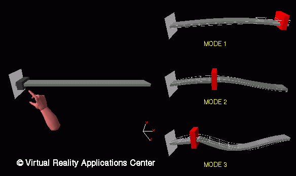

Design Sensitivities and a Virtual Environment
Here, a cantilever beam is modeled as 12 beam elements. The user has the
ability to reach out in three-dimensional space and move the additional
weight to various places on the beam. Design sensitivities are used to
computer the approximate new mode shape. Three examples are shown.
Return to Introduction...